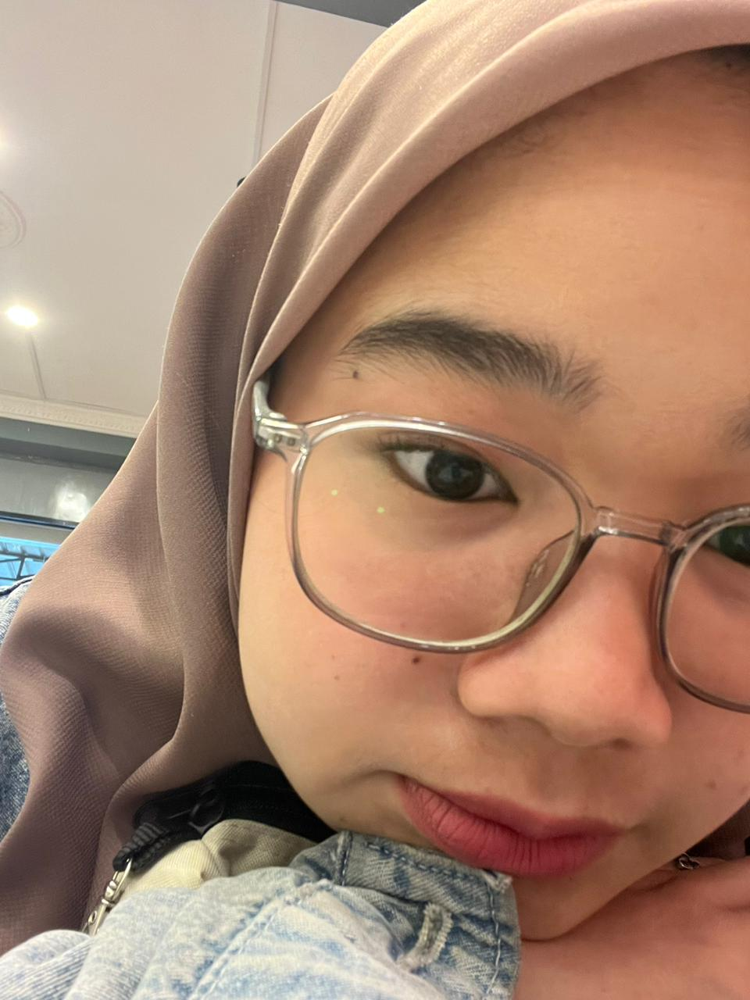
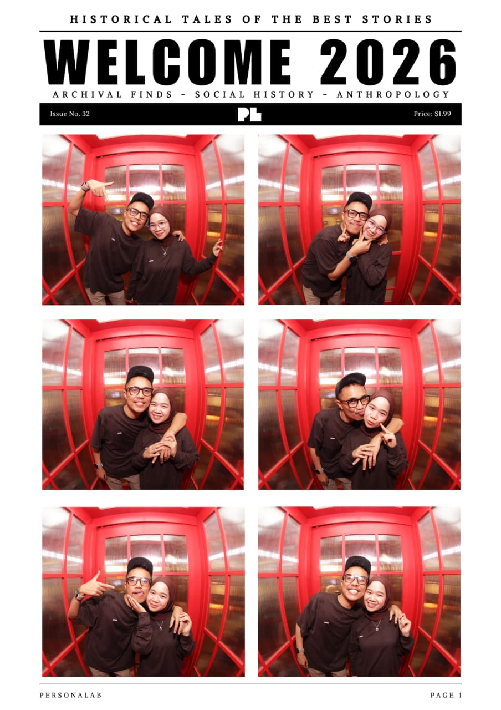
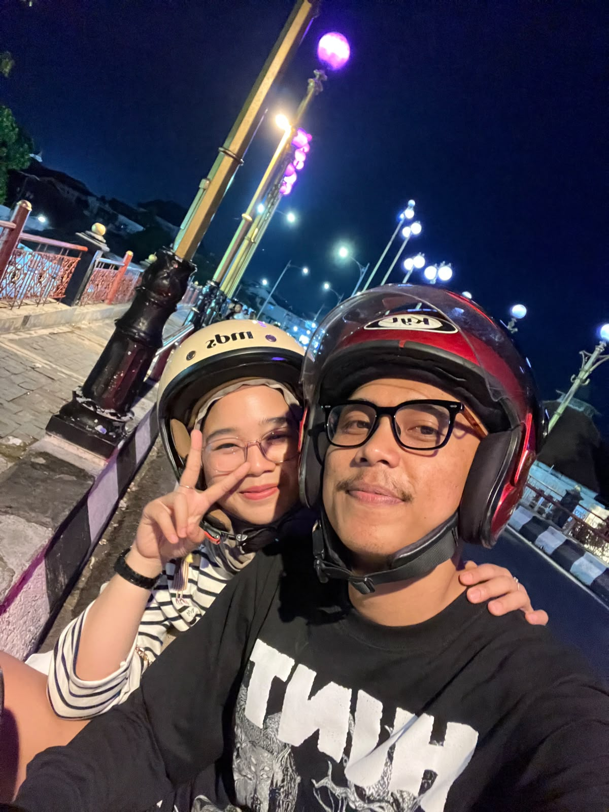
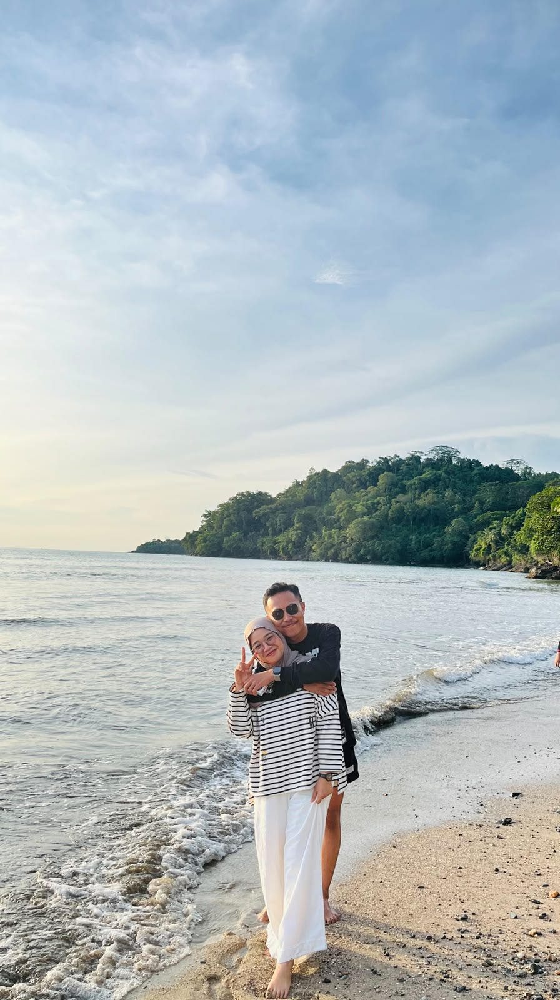
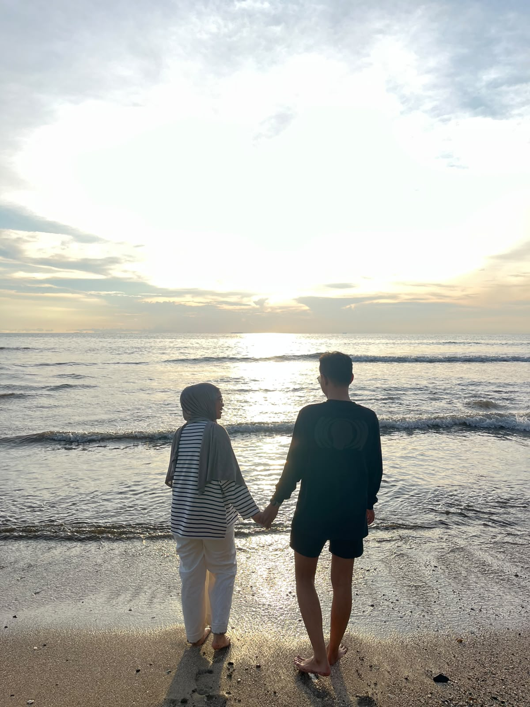
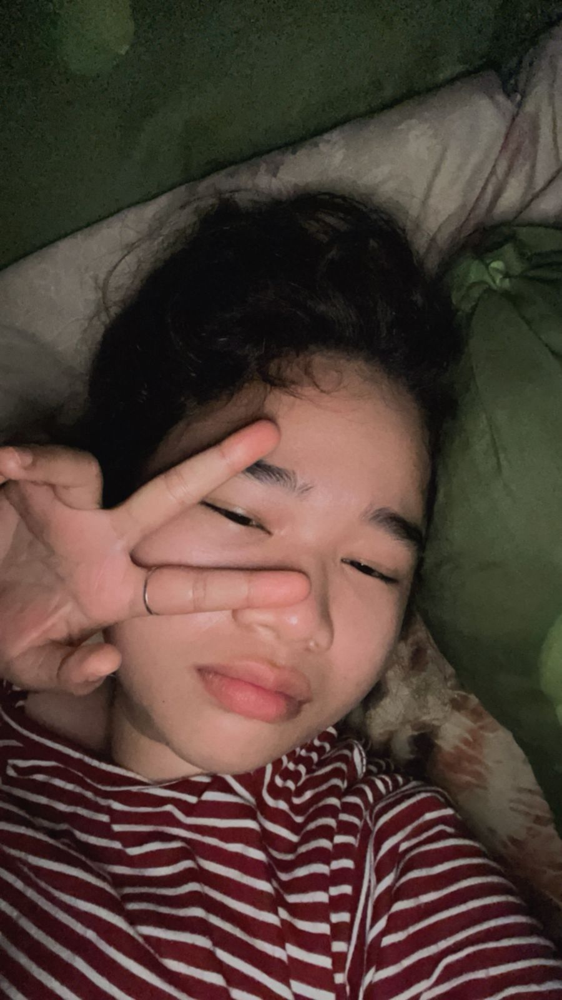
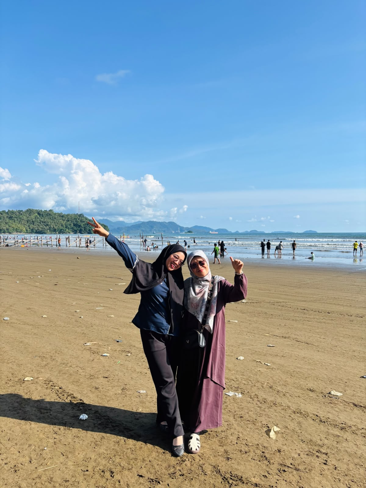
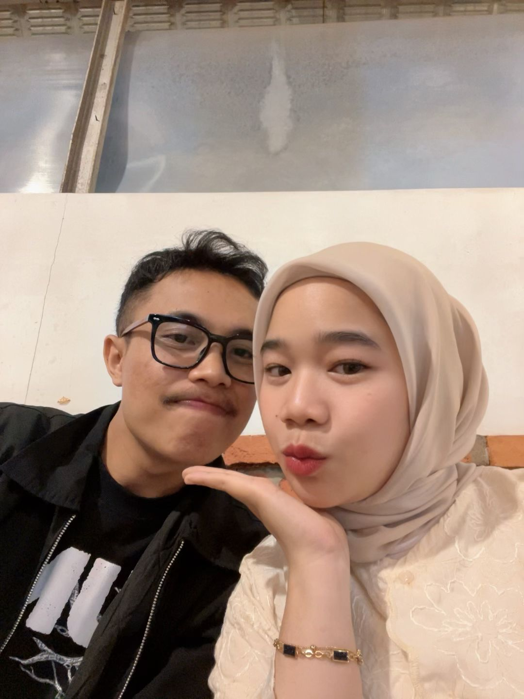

For someone who means the world to me
Hari ini dunia ikut merayakan hadirmu — dan aku yang paling bersyukur. Terima kasih sudah jadi rumah, tawa, dan tempat pulang setiap hari.
Pelan pelan untuk scrollnya dan nikmatin tiap momen foto yg di lampirkan sesuai irama musik yang ada.
Dan jangan lupa klik setiap foto momen yang ada!








Beberapa babak yang tak akan kulupakan
Aku tak menyangka satu perkenalan bisa mengubah begitu banyak hal. Saat itu, kami berada di dua kota yang berbeda. Aku tinggal di Jakarta, sementara dia berada di Padang. Jarak yang terbentang begitu jauh seharusnya menjadi alasan untuk tidak berharap lebih. Namun, ternyata semesta memiliki rencana yang berbeda. Hari demi hari, obrolan kami semakin panjang. Dari sekadar menanyakan "lagi apa?" hingga saling berbagi cerita tentang mimpi, keluarga, pekerjaan, bahkan hal-hal kecil yang membuat hari terasa lebih berwarna. Tanpa disadari, dia menjadi orang pertama yang ingin aku cari saat bangun pagi dan orang terakhir yang ingin aku ucapkan selamat malam sebelum tidur. Meski belum pernah bertemu, kehadirannya selalu terasa dekat. Jarak ribuan kilometer seolah tidak berarti ketika perhatian, doa, dan rasa saling percaya selalu menyertai setiap langkah kami. Kami belajar bahwa cinta bukan tentang seberapa sering bertemu, melainkan seberapa besar usaha untuk tetap saling menjaga meski terpisah oleh jarak. Perlahan, rasa nyaman berubah menjadi rasa sayang. Dari layar ponsel, tumbuh sebuah hubungan yang penuh ketulusan. Kami percaya bahwa jika dua hati memang ditakdirkan bersama, sejauh apa pun jaraknya, selalu ada jalan untuk saling menemukan. Kini, ketika mengingat kembali bagaimana semuanya dimulai, aku hanya bisa tersenyum. Siapa sangka, sebuah perkenalan sederhana di media sosial mampu menghadirkan kisah cinta yang begitu indah. Dari Jakarta dan Padang, dua kota yang berjauhan, lahirlah sebuah cerita yang mengajarkan bahwa cinta sejati tidak pernah mengenal batas jarak. Yang dibutuhkan hanyalah kesabaran, kepercayaan, dan dua hati yang sama-sama memilih untuk bertahan.
Melewati hari baik dan buruk, dan tetap memilih untuk saling ada. Kami belajar bahwa komunikasi bukan sekadar berbicara, tetapi juga mendengarkan dengan sungguh-sungguh. Kami belajar bahwa setiap perbedaan tidak selalu harus dimenangkan, melainkan dipahami. Saat salah satu sedang lelah, yang lain berusaha menjadi tempat untuk beristirahat. Saat salah satu melakukan kesalahan, kami mencoba mengingat bahwa setiap orang sedang bertumbuh dengan caranya masing-masing. Perjalanan ini mengajarkan kami untuk lebih sabar. Tidak semua masalah selesai dalam satu hari, dan tidak semua luka langsung pulih. Namun, selama kami tetap mau duduk bersama, berbicara dengan jujur, dan saling mengulurkan tangan, selalu ada jalan untuk melangkah maju.
Dan hari ini aku hanya ingin merayakanmu. Di hari ulang tahunmu ini, aku berharap semoga setiap doa baik yang kau panjatkan satu per satu menemukan jalannya untuk menjadi kenyataan. Semoga langkahmu selalu dipenuhi kemudahan, hatimu selalu dikelilingi ketenangan, dan setiap impian yang sedang kau perjuangkan dapat tercapai pada waktu yang terbaik. Aku juga berharap semoga kesehatan, kebahagiaan, dan keberkahan selalu menyertaimu. Ketika nanti ada hari-hari yang terasa berat, semoga kamu tetap memiliki kekuatan untuk bangkit dan tidak pernah kehilangan harapan. Ingatlah bahwa kamu tidak harus menghadapi semuanya sendirian, karena aku ingin terus berjalan di sisimu, menjadi tempat berbagi cerita, tawa, dan juga air mata. Terima kasih telah hadir dalam hidupku dan mengajarkanku arti kesabaran, pengertian, dan kasih sayang. Semoga bertambahnya usiamu menjadi awal dari babak kehidupan yang lebih indah, lebih bermakna, dan penuh dengan kebahagiaan. Selamat ulang tahun, cintaku. Semoga Tuhan selalu melindungimu, memberimu umur yang panjang, kesehatan yang baik, rezeki yang melimpah, serta hati yang selalu dipenuhi kedamaian. Apa pun yang akan terjadi di masa depan, aku berharap kita terus bertumbuh bersama, saling mendukung, saling memahami, dan terus memilih satu sama lain, hari demi hari.
From, Ahmad Fauzan Antoni. ♥
Orang yang selalu menjadi anak kecil di hadapan kamu sampai kapan pun bersama kamu